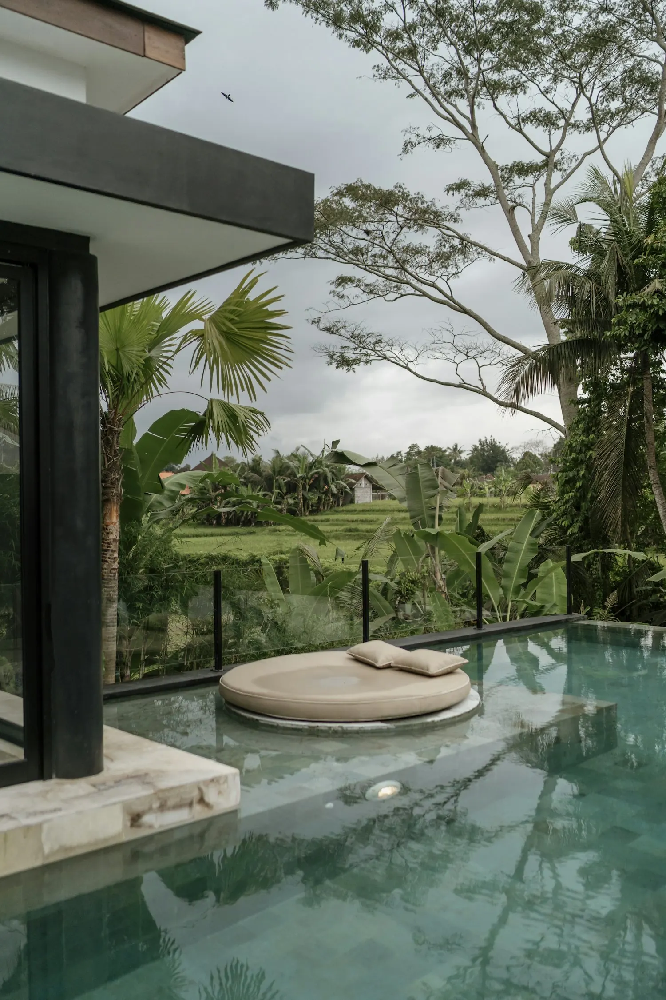
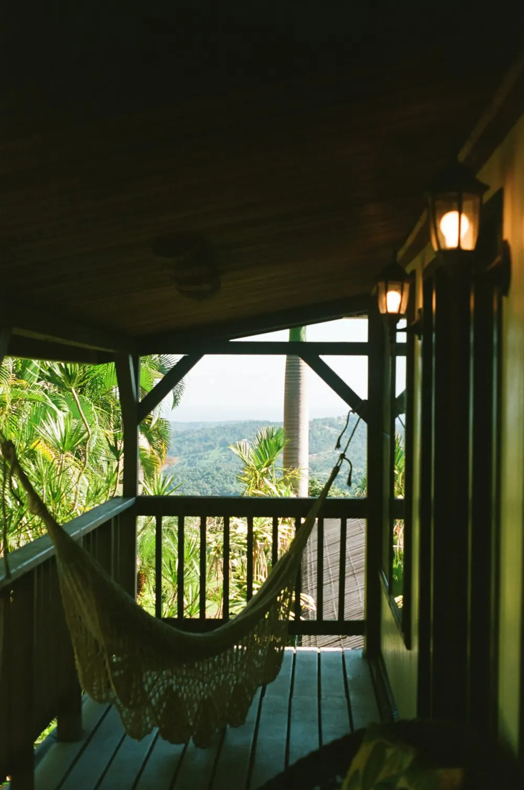
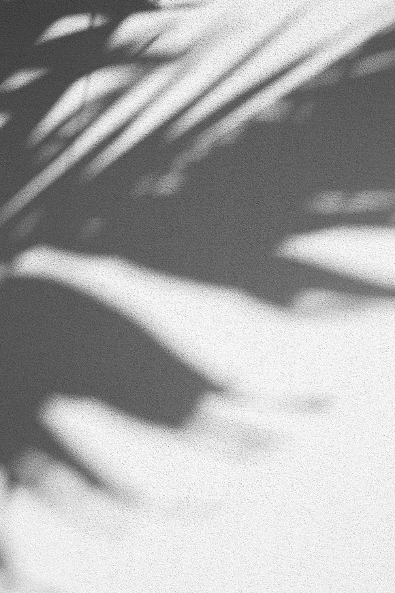
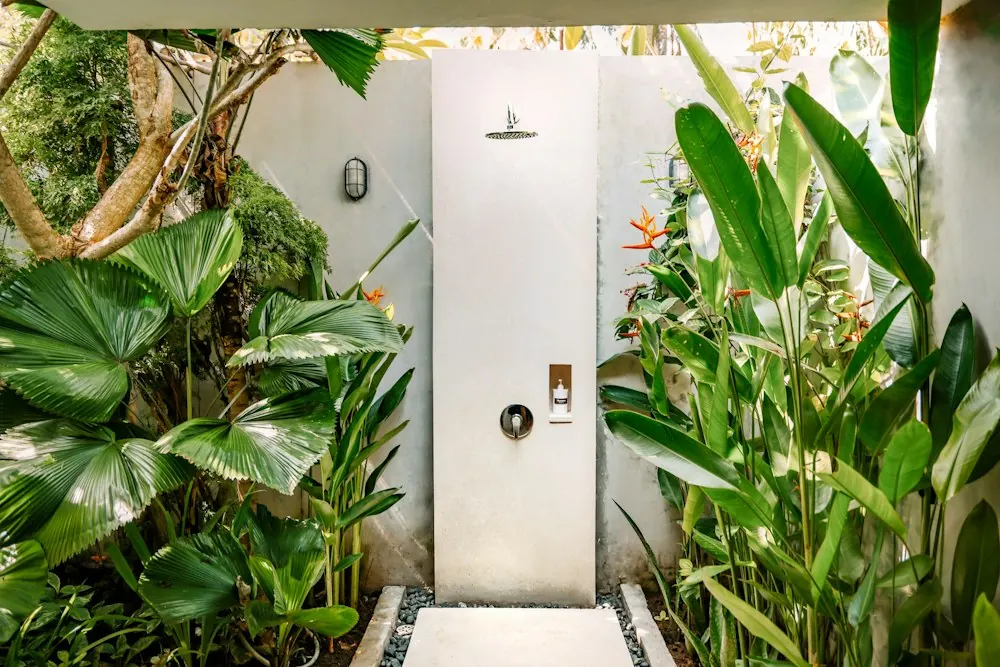

YANBARU 沖縄・やんばる｜プール付きヴィラ
森と海のあいだで、 ほどける。
沖縄本島の北、
やんばるの森が海に迫る場所に建つヴィラ。
森の緑を映すプールと、
歩いてすぐの静かな浜辺。
どちらも、あなたのためだけにあります。
STYLE この宿での過ごし方
森と海のあいだで過ごす、ある一日。
-

AFTERNOON14:00
ハンモックで、昼寝をする
プールでひと泳ぎしたら、ハンモックへ。
鳥の声と葉擦れの音に、いつのまにか眠っている。 -

EVENING18:30
浜辺で、夕日を見送る
歩いて3分の浜辺へ。
空と海が同じ色に染まっていく。 -
NIGHT22:00
波の音と、星空
外の灯りを落とすと、星がいっせいに現れる。
聞こえるのは、遠い波の音だけ。


INFORMATION 宿泊のご案内
- 客室
- ヴィラ 1棟（プライベートプール付き）
- 定員
- 4名まで
- 広さ
- 110㎡＋プールデッキ 40㎡
- 設備
- キングベッド、ツインベッド、プライベートプール（温水・通年）、キッチン、屋外シャワー、バスルーム、ハンモック
- 料金
-
- 平日¥82,000〜
- 休前日¥98,000〜
- チェックイン
- 15:00〜19:00
- チェックアウト
- 11:00
※森の生き物を守るため、夜は屋外の照明を落としています。
ACCESS アクセス
- 所在地
- 沖縄県国頭郡詳しい場所は、ご予約の確定後にお知らせします
- 飛行機
- 那覇空港から車で約2時間
- 車
- 沖縄自動車道 許田ICから約50分
- 駐車場
- 2台分（無料）